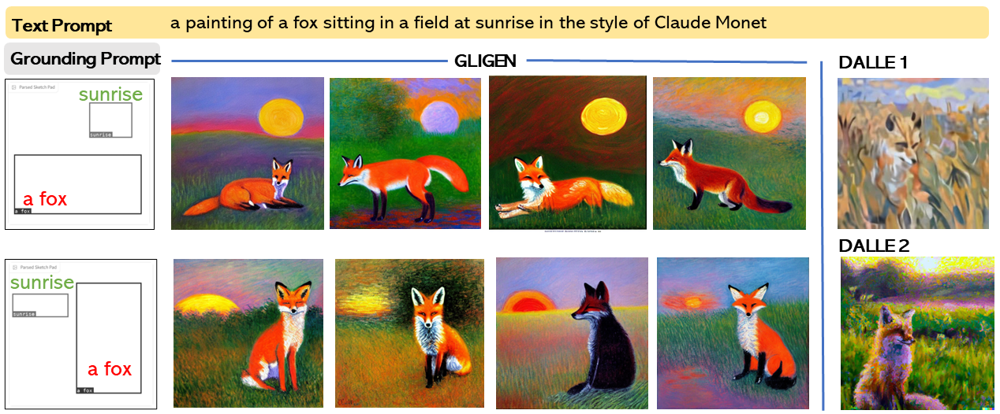

Figure 1. GLIGEN enables versatile grounding capabilities for a frozen text-to-image generation model.
Large-scale text-to-image diffusion models have made amazing advances. However, the status quo is to use text input alone, which can impede controllability. In this work, we propose GLIGEN, Grounded-Language-to-Image Generation, a novel approach that builds upon and extends the functionality of existing pre-trained text-to-image diffusion models by enabling them to also be conditioned on grounding inputs. To preserve the vast concept knowledge of the pre-trained model, we freeze all of its weights and inject the grounding information into new trainable layers via a gated mechanism. Our model achieves open-world grounded text2img generation with caption and bounding box condition inputs, and the grounding ability generalizes well to novel spatial configuration and concepts. GLIGEN’s zero-shot performance on COCO and LVIS outperforms that of existing supervised layout-to-image baselines by a large margin.
Figure 2. Gated Self-Attention is used to fuse new grounding tokens.

By exploiting knowledge of pretrained text2img model, GLIGEN can generate varieties of objects in given locations, it also supports varies of styles.

Compared with existing text2img models such as DALLE1 and DALLE2, GLIGEN enables the new capability to allow grounding instruction. The text prompt and DALLE generated images are from OpenAI Blog.
By explicitly specifying object size and location, GLIGEN can generate spatially counterfactual results which are difficult to release through text2img model (e.g., Stable Diffusion).

GLIGEN can also ground on reference images. Top row indicates reference images can provide more fine-grained details beyond text description such as style and shape or car. The second row shows reference image can also be used as style image in which case we find ground it into corner or edge of an image is sufficient.
GLIGEN can also ground human keypoints while doing text-to-image generation.

Like other diffusion models, GLIGEN can also perform grounded image inpaint, which can generate objects tightly following provided bounding boxes.
@article{li2023gligen,
author = {Li, Yuheng and Liu, Haotian and Wu, Qingyang and Mu, Fangzhou and Yang, Jianwei and Gao, Jianfeng and Li, Chunyuan and Lee, Yong Jae},
title = {GLIGEN: Open-Set Grounded Text-to-Image Generation},
publisher = {arXiv:2301.07093},
year = {2023},
}
This website is adapted from Nerfies and X-Decoder, licensed under a Creative Commons Attribution-ShareAlike 4.0 International License.